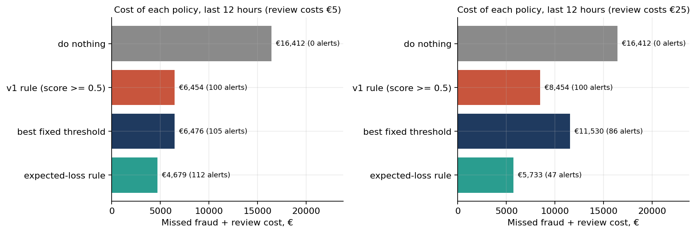

Projects / Credit card fraud: from classification to decision
Complete · numbers checked 2026-10-08An expected-loss rule cuts fraud cost 27% against the default 0.5 cut-off
On 284,807 card transactions (492 frauds), reviewing a transaction when its fraud probability times its amount exceeds a €5 review cost cut the cost of missed fraud plus reviews from €6,454 to €4,679 on the held-out last 12 hours, and raised the share of fraud value caught from 64% to 75%. The price: it catches 35% of frauds by count, against 68% for the default rule, because it ignores most small frauds.
- Transactions
- 284,807
- Frauds
- 492 (0.17%)
- Average precision, held out
- 0.76
- Cost cut at €5 review
- 27%
01The question
A fraud team does not need to know "is this fraud?" so much as which alerts are worth an analyst's time, judged in euros.
02The data
The ULB credit-card dataset (Dal Pozzolo et al. 2015): two days of European card traffic in September 2013. V1 to V28 are principal components of undisclosed features; Time and Amount (euros) are raw. After removing duplicates, models train on the first 24 hours, tune on hours 24 to 36, and are tested once on the last 12 hours (114 frauds, €16,412).
03The method
A Random Forest, scored by average precision (0.76, 95% interval 0.68 to 0.83), because accuracy is uninformative when 0.17% of transactions are fraud. It is tied with gradient-boosted trees; the model matters less than the decision rule.
The rule compares three policies on the same test hours: the default 0.5 cut-off, the best fixed threshold, and review-when-expected-loss-exceeds-cost. It beats both at every review cost tested, €1 to €25.

04What this does not show
- Two days of data. The principal components were computed by the publisher on both days, a leak no user of this dataset can undo.
- Review costs are assumptions, so a range is shown. A caught fraud is assumed fully recovered.
- The rule catches most of the fraud euros but misses most small frauds by count; whether that is acceptable is a business decision.
- Card testing, where a thief probes with tiny charges, needs separate treatment.
05What the first version claimed
The first version reported precision 0.974 and recall 0.765. Those numbers held up less well than they looked: re-run with a fixed seed they give 0.963 and 0.786, the test set held only 98 frauds, so recall's interval runs from 0.69 to 0.86, and 5 of those test frauds had an identical twin in training. The rebuild asks a different question and scores it on a time-ordered split.
06Reproduce it
python -m venv .venv && .venv/bin/pip install -r requirements.txt .venv/bin/python scripts/get_data.py # downloads creditcard.csv and checks its SHA-256 cd notebooks && ../.venv/bin/jupyter nbconvert --to notebook --execute --inplace fraud_decisions.ipynb
Source and code: repository. Data: ULB Machine Learning Group credit-card dataset (Dal Pozzolo et al. 2015).